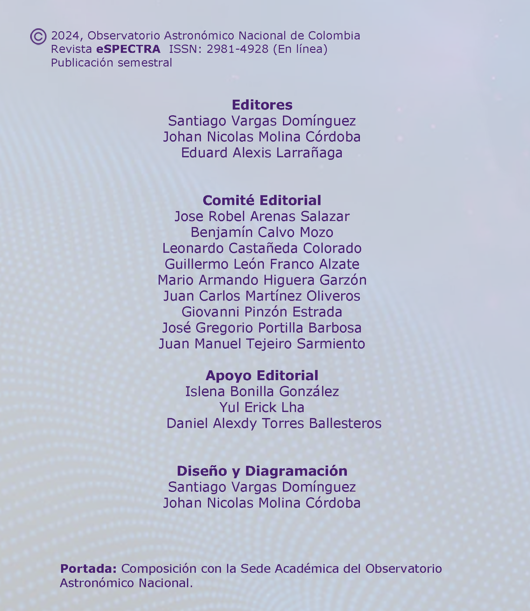

Revista deInvestigación
¡Te presentamos la nueva revista de investigación del Observatorio Astronómico Nacional de Colombia!
En esta publicación encuentras trabajos desarrollados principalmente por estudiantes, con resultados de
investigaciones realizadas en diversas áreas de la astronomía y la astrofísica.
La Revista


Revista eSPECTRA, Volúmen 2, Número 1 (2024)
Artículos de Investigación
Reseñas del Ciclo de Conmemoración: 220 años del OAN
Prehistoria del Observatorio Astronómico Nacional
Por: Alberto Gómez Gutiérrez, Vicepresidente, Academia Colombiana de Historia.
Se celebraron en 2023 los 220 años del establecimiento del primer Observatorio astronómico neogranadino, hoy nacional, considerado por varios historiadores como el más antiguo de América. Este edificio fue construido con fondos aportados por José Celestino Mutis entre 1802 y 1803. El origen y el monto estos aportes, su destino y su efecto, serán seguramente materia de trabajos por venir. En este breve resumen de la ponencia presentada en el Archivo Histórico de la Universidad del Rosario referiré a los momentos preliminares a su establecimiento formal, en el periodo que corrió entre 1760 ‒fecha de la llegada de Mutis a este territorio‒ y 1802 ‒fecha del inicio de esta obra arquitectónica‒, en torno a tres protagonistas de su historia.
Se celebraron en 2023 los 220 años del establecimiento del primer Observatorio astronómico neogranadino, hoy nacional, considerado por varios historiadores como el más antiguo de América. Este edificio fue construido con fondos aportados por José Celestino Mutis entre 1802 y 1803. El origen y el monto estos aportes, su destino y su efecto, serán seguramente materia de trabajos por venir. En este breve resumen de la ponencia presentada en el Archivo Histórico de la Universidad del Rosario referiré a los momentos preliminares a su establecimiento formal, en el periodo que corrió entre 1760 ‒fecha de la llegada de Mutis a este territorio‒ y 1802 ‒fecha del inicio de esta obra arquitectónica‒, en torno a tres protagonistas de su historia.
La historia del Observatorio y el Observatorio en la historia
Por: Santiago Vargas Domínguez, OAN - Universidad Nacional de Colombia.
La Casa de la Botánica y el origen del Jardín Botánico de Bogotá
Por: Xavier Marquínez, OAN - Universidad Nacional de Colombia.
El pasado se actualiza en el presente en forma de legado, el futuro se anticipa en el presente en forma de proyectos. Sin memoria, no podemos gestar buenos proyectos como ciudad, ni como nación. Desafortunadamente somos una sociedad amnésica, la Casa de la Botánica, el lugar donde comenzó a gestarse la ciencia en Colombia, es hoy un patrimonio olvidado.
El pasado se actualiza en el presente en forma de legado, el futuro se anticipa en el presente en forma de proyectos. Sin memoria, no podemos gestar buenos proyectos como ciudad, ni como nación. Desafortunadamente somos una sociedad amnésica, la Casa de la Botánica, el lugar donde comenzó a gestarse la ciencia en Colombia, es hoy un patrimonio olvidado.
La astronomía que practicó Francisco José de Caldas
Por: Gregorio Portilla, OAN - Universidad Nacional de Colombia.
De cielo cayó una roca
Por: Freddy Moreno, Centro de Estudios Astrofísicos, Gimnasio Campestre.
La biblioteca, el observatorio y el mapa nacional en los albores del siglo XX
Por: Anthony Picón, Biblioteca Nacional de Colombia.

Julio Garavito Armero y el Observatorio
Por: Clara Helena Sánchez, Academia Colombiana de Ciencias y Universidad Nacional de Colombia.
Un recorrido histórico a través de los patrones de tiempo
Por: Claudia Fernanda Rodríguez, Instituto Nacional de Metrología.
Mario Armando Higuera G, OAN - Universidad Nacional de Colombia.
Mario Armando Higuera G, OAN - Universidad Nacional de Colombia.
El observatorio, la arquitectura y cultura en la Bogotá de siglo XIX
Por: María del Pilar López, Universidad Nacional de Colombia.
Cuadrantes y anteojos: instrumentos para un observatorio de la ilustración
Por: Francisco González, Observatorio de la Armada (España).
El Observatorio Astronómico Nacional una imagen dialéctica
Por: Edmon Castell, Universidad Nacional de Colombia.
Las mujeres en Astronomía en Colombia
Por: Beatriz Sabogal, Universidad de los Andes.
Veronica Arias, Universidad Nacional de Colombia.
Maria Gracia Batista. Universidad de los Andes, Universidad Nacional de Colombia.
Angela Camacho, Red Colombiana de Mujeres Científicas.
Veronica Arias, Universidad Nacional de Colombia.
Maria Gracia Batista. Universidad de los Andes, Universidad Nacional de Colombia.
Angela Camacho, Red Colombiana de Mujeres Científicas.
Contáctanos
Aquí nos encuentras